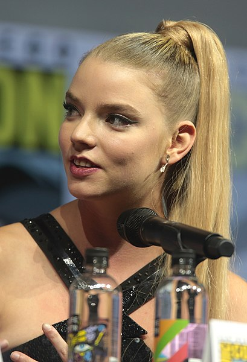
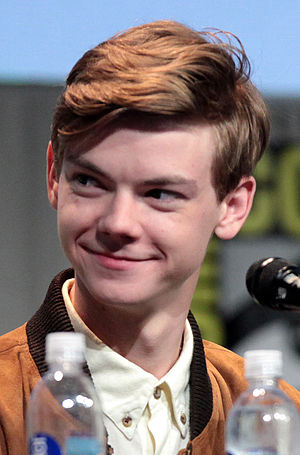

Назад
Актеры

Аня Тейлор-Джой — Элизабет Хармон, шахматный вундеркинд, сирота

Томас Броди-Сангстер — Бенни Уоттс, чемпион США по шахматам
Гарри Меллинг — Гарри Белтик, чемпион штата Кентукки по шахматам
Мариэль Хеллер — Альма Уитли, приёмная мать Бет
Билл Кэмп — мистер Шайбел, уборщик в приюте